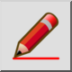

Esta é uma tradução automática.
Barra de Ferramenta / Ícone:

Menu: Ver > Modo de rascunho
Atalho: D, F
Comandos: draftmode | df
Alterna o modo de rascunho do desenho atual. No modo de rascunho, todas as linhas são mostradas com uma largura de 1 pixel. Os grandes textos são simplificados. Use o modo de rascunho se o seu desenho se tornar muito grande e demorar muito tempo a redesenhá-lo.